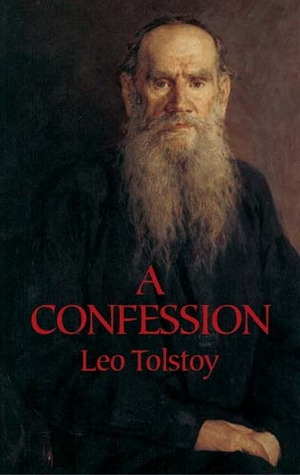

Man's Search for meaning

Psychiatrist Viktor Frankl's memoir has riveted generations of readers with its descriptions of life in Nazi death camps and its lessons for spiritual survival. Based on his own experience and the stories of his patients, Frankl argues that we cannot avoid suffering but we can choose how to cope with it, find meaning in it, and move forward with renewed purpose. At the heart of his theory, known as logotherapy, is a conviction that the primary human drive is not pleasure but the pursuit of what we find meaningful. Man's Search for Meaning has become one of the most influential books in America; it continues to inspire us all to find significance in the very act of living.
A Confession
- 
A Confession -- an essay by Leo Tolstoy on his religious thoughts -- shows the great author in process of looking for answers to profound questions that trouble all who take them on: "What will come of my life?" and "What is the meaning of life?" these are questions whose answers were an absolute requirement for Tolstoy. In the course of the essay, Tolstoy shows different attempts to find answers on the examples of science, philosophy, eastern wisdom, and the opinions of his fellow novelists. . . . finding no workable solution in any of these, Tolstoy recognizes the deep religious convictions of ordinary people as containing the key to true answers. The first attempt at its publication took place in 1882 (Russkaya Mysl, No 5), but Tolstoy's work was removed virtually from the whole edition of the journal by Orthodox Church censorship. The text was later published in Geneva (1884), in Russia as late as 1906 (Vsemirnyj Vestnik, No 1)